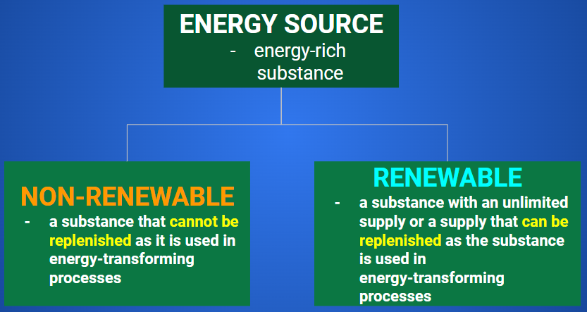
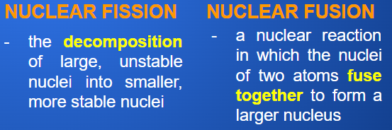

Efficiency, Energy Sources, and Energy Conservation
EFFICIENCY
Ratio of the amount of useful energy produced (energy output, or Eout) to the amount of energy used (energy input, or Ein), expressed as a percentage.

The efficiency equation may be used to calculate the efficiency of transforming one form of energy into another, or the efficiency with which work changes an object’s gravitational potential energy or kinetic energy.
ExampleA firefly’s body transforms chemical energy in food into radiant energy that appears as a greenish glow in its abdomen. Fireflies use this glow to attract mates or prey. What is a firefly’s efficiency if its body transforms 4.13 J of chemical energy into 3.63 J of radiant energy? Since we are given the amounts of energy used and produced, we may use the efficiency equation to calculate the efficiency with which the firefly’s body transforms chemical energy into radiant energy. Ein = 4.13 J (chemical); Eout = 3.63 J (radiant) |


ExampleWhat is the efficiency of a rope-and-pulley system if a painter uses 1.93 kJ of mechanical energy to pull on the rope and lift a 20.0 kg paint barrel at constant speed to a height of 7.5 m above the ground? In this question, the input energy is the energy the painter uses to pull on the rope. You are not given the output energy, so you cannot use the efficiency equation right away. As the painter pulls on the rope, the paint barrel moves higher and gains gravitational potential energy. The painter’s mechanical energy is transformed into gravitational potential energy. Therefore, Eg is the output energy, Eout. We may calculate the barrel’s gravitational potential energy when it is 7.5 m above the ground by using the equation Eg = mgh. Ein = 1.93 kJ or 1.93 X 103 J; m = 20.0 kg; h = 7.5 m; g = 9.8 N/kg |


Practice
A forklift uses 5200 J of energy to lift a 50.0 kg mass to a height of 4.0 m at a constant speed. What is the efficiency of the forklift?
SOURCES OF ENERGY

NON-RENEWABLE ENERGY RESOURCES
Select each item to learn more.
FOSSIL FUELS
fuel produced by the decayed and compressed remains of plants that lived hundreds of millions of years ago
NUCLEAR ENERGY
form of potential energy produced by interactions in the nucleus of atoms (atomic nuclei)

RENEWABLE ENERGY RESOURCES
Select each item to learn more.
SOLAR ENERGY
radiant energy from the Sun
PHOTOVOLTAIC CELL
a device that transforms radiant energy into electrical energy
HYDROELECTRICITY
electricity produced by transforming the kinetic energy of rushing water into electrical energy
ENERGY CONSERVATION
Energy may be conserved by designing, producing, and using machines, appliances, and devices that transform energy more efficiently. Energy may also be conserved by:
turning lights off when not required
switching off electrical devices instead of leaving them on standby mode
taking short showers instead of baths if possible
running dishwashers and clothes washers only when they are full
hanging clothes to dry
using fans to reduce the need for air conditioning
using public transit and carpooling when possible